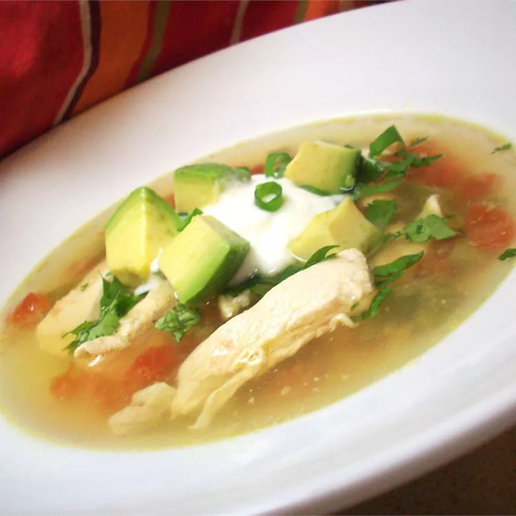

Avocado soup with chicken and lime

Description
Thin strips of chicken breast are simmered in broth with jalapenos, onion, garlic and lime and then combined with avocado and topped with crisp corn tortilla strips in this spicy soup.
Ingredients
- 4 (6 inch) corn tortillas, julienned
- 1 ½ tablespoons olive oil
- 1 white onion, sliced thinly
- 8 cloves garlic, thinly sliced
- 4 fresh jalapeno peppers, sliced
- 8 ounces skinless, boneless chicken breast halves - cut into thin strips
- 1 quart chicken broth
- ¼ cup fresh lime juice
- 1 tomato, seeded and diced
- salt and ground black pepper to taste
- 1 avocado - peeled, pitted and diced
- ¼ cup chopped fresh cilantro
Steps
- Preheat oven to 400 degrees F (200 degrees C). Arrange tortilla strips on a baking sheet.
- Bake in the preheated oven until lightly browned, 3 to 5 minutes.
- Heat oil in a large saucepan over medium heat. Cook onion, garlic, and jalapenos in oil until lightly browned, 4 to 5 minutes. Stir in chicken, chicken broth, lime juice, tomato, salt and pepper. Gently simmer until chicken is no longer pink, about 10 minutes. Stir in avocado and cilantro and heat through, 3 to 5 minutes. Adjust seasonings to taste.
- Ladle soup into bowls and sprinkle with tortilla strips to serve.